AI ads that look real, and hold to the end.
Drama and story ads, 3D animated stories, AI UGC presenters and ads cut from real footage. Strong hooks, tight pacing, captions checked word by word, and every shot checked for AI errors before you see it.
AI video ads
Drama, story, 3D animated and AI UGC. The same faces, voices and product from the first shot to the last.
Italian skincare brand, 2026. The drama above, rebuilt in Italian for their product: 75 shots, three characters, lip-synced dialogue, the real product label in every product shot, and only claims from the product page.
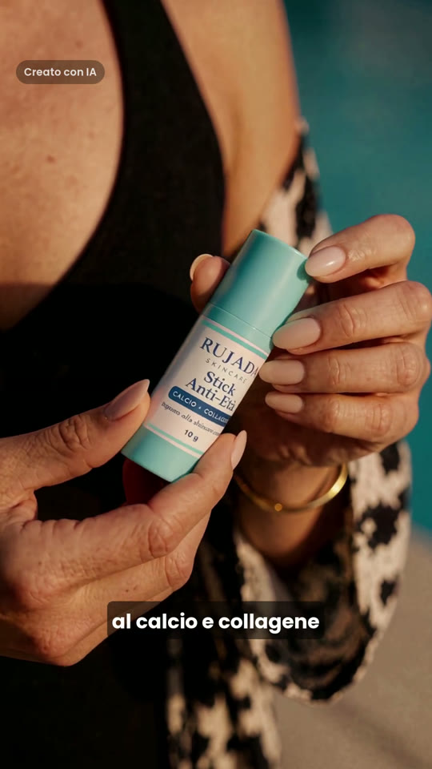
Drama · AI-generatedThe product scenes, 55 seconds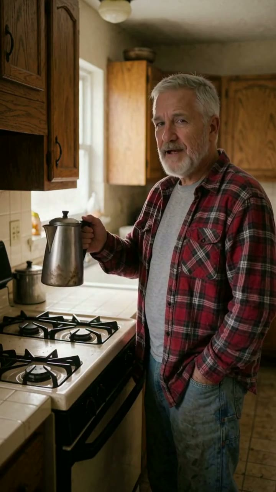
Story ad · AI-generatedStory ad: father and son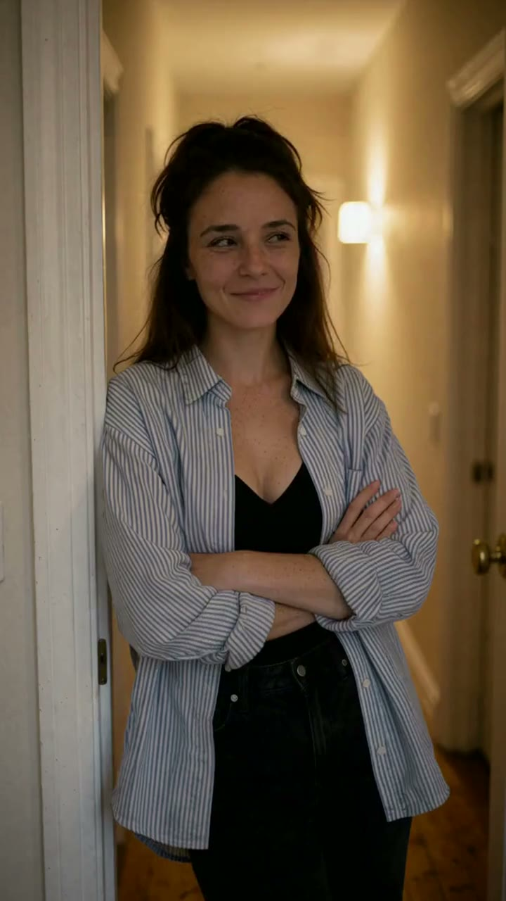
Story ad · AI-generatedStory ad: two characters, one kitchen 3D animated · AI-generatedPAPERWING: The Scenic Route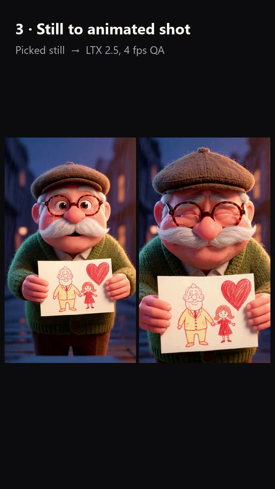
3D animated · How it was madeHow PAPERWING was made AI UGC · AI-generatedAI presenter: three hooks on one script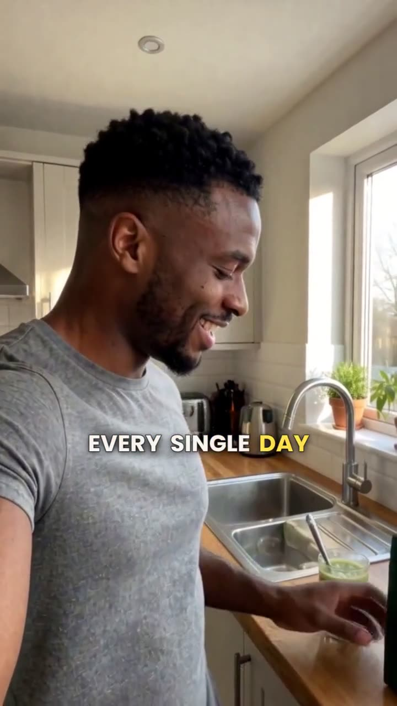
AI UGC · AI-generatedUGC testimonial: morning routine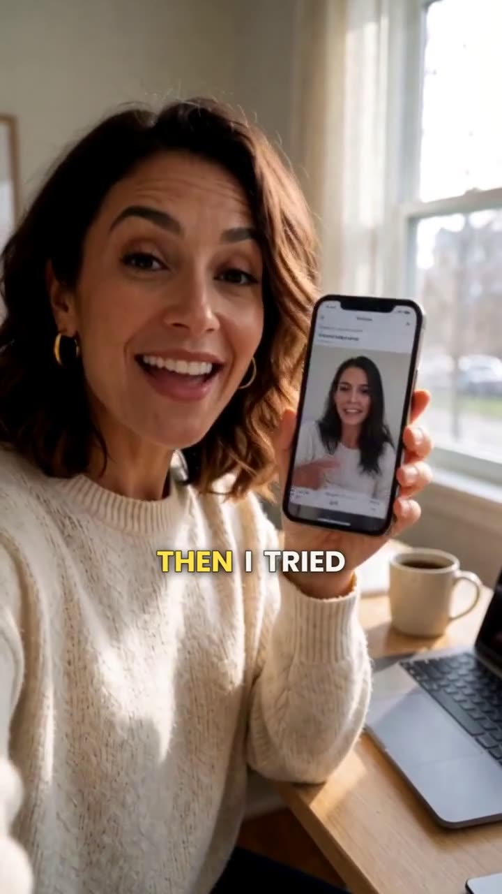
AI UGC · AI-generatedAI presenter: app walkthrough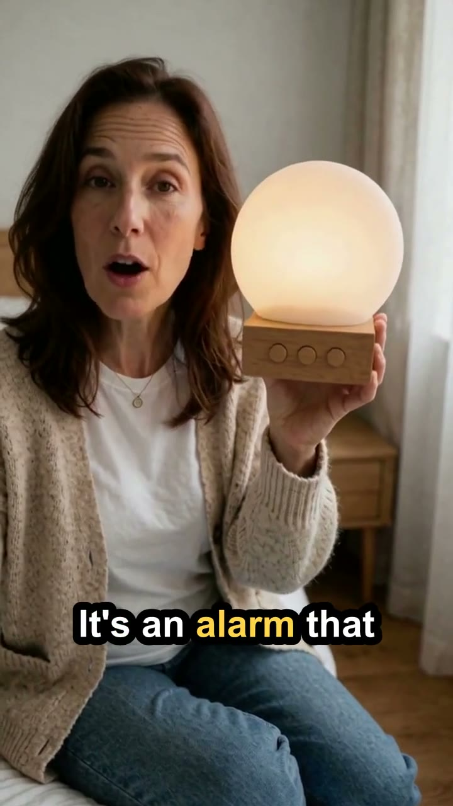
AI UGC · AI-generatedAI presenter: a 45-second sales videoHow the product stays the same in every shot
AI models redraw labels, change sizes and add extra products. On this ad, 25 product shots had to show the client's exact stick, so each one went through the same steps.
Drag to turn, scroll or pinch to zoom
Built from the client's photos
Before any shot was made, I rebuilt the stick as a 3D model at real size with the client's own label artwork. Every product shot uses it as the reference, so the label, colour and size match from scene to scene. Turn it, or open it.
- Diameter
- 22 mm
- Height, closed
- 75 mm
- Label wrap
- 290°
- Turquoise
- #50C6D9
- Label pill
- #02318A

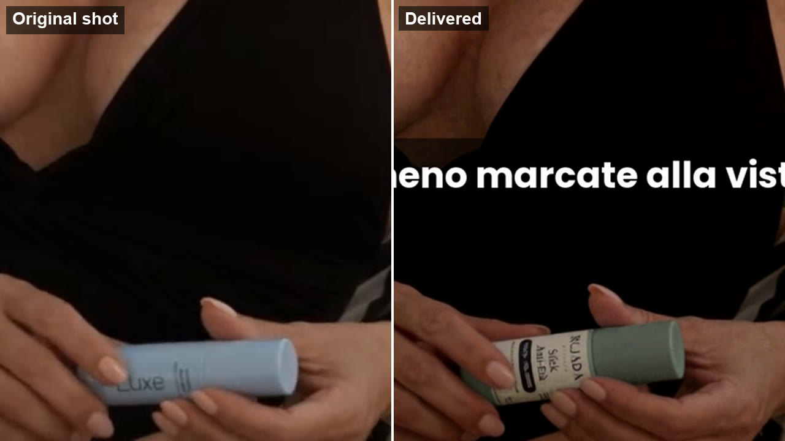
Product identityOriginal shot, then delivered
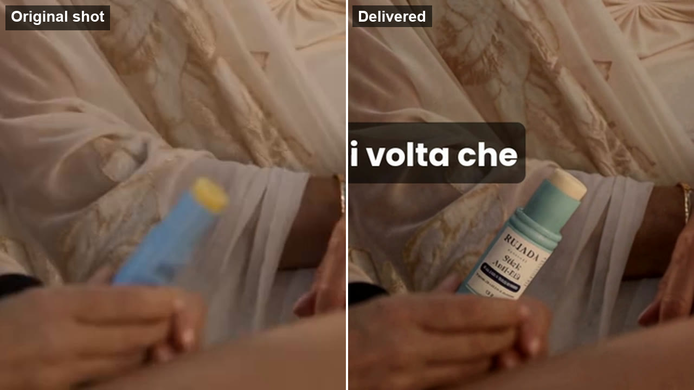
Product identitySame size, same scene light
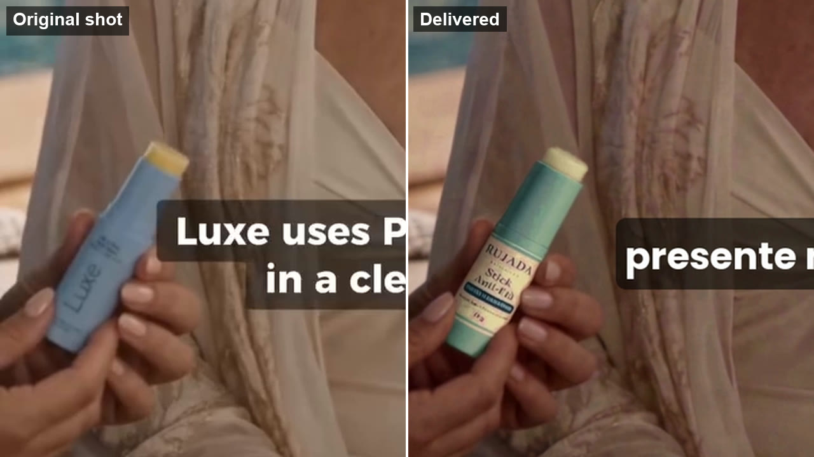
Product identityThe real label, never retyped- Their photos first. Shape, colours and label come from the client's own product photos.
- One product, right size. One stick per hand, measured against the original shot.
- Scene light. The product takes the light of the shot it is in.
- Real behaviour. The balm goes on the way the product page says it does, and claims come only from that page.
- Checked frame by frame before anything is sent for review.
Meta ads from real footage
Sponsored ads for Perplexity and Wix, cut from a creator's footage. One body, different hooks.
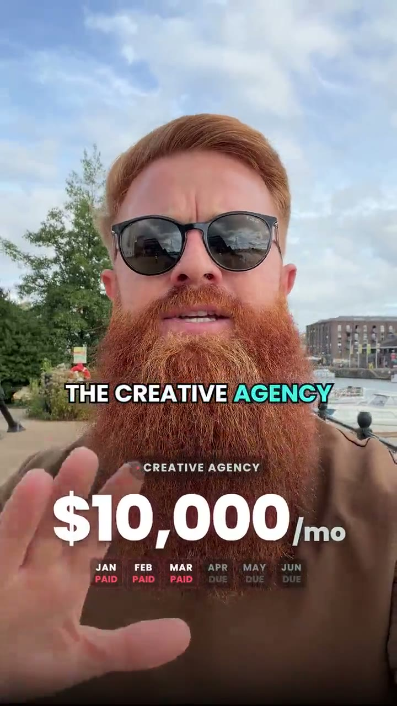
Perplexity · SponsorHook: the agency bill Perplexity · SponsorHook: ads losing money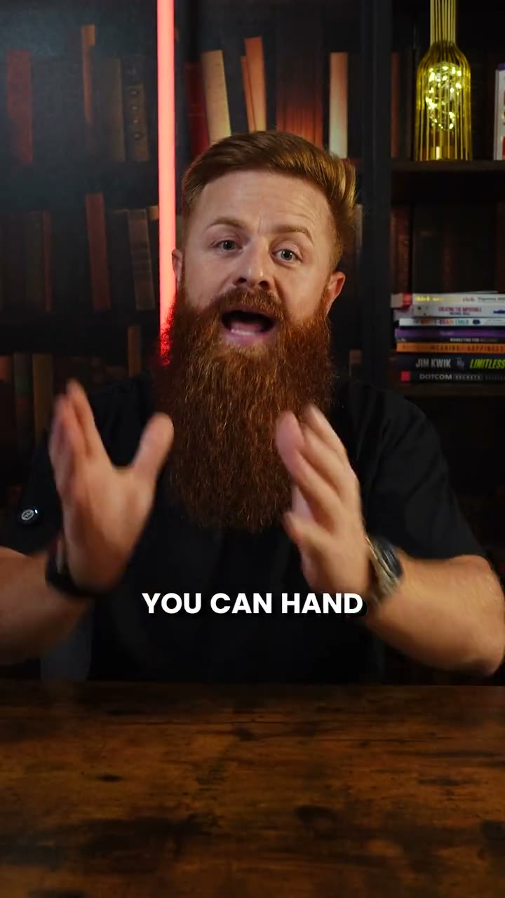
Wix · SponsorHook 1: a seven-figure store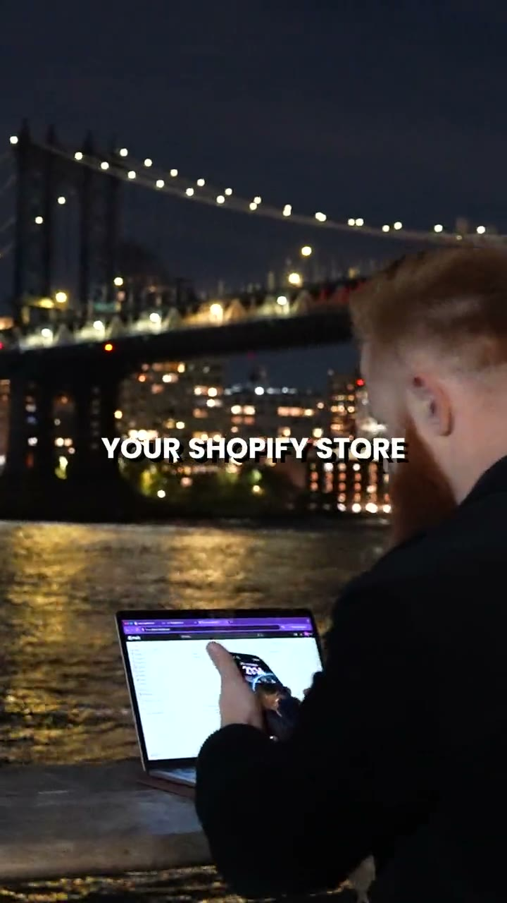
Wix · SponsorHook 2: by the river at night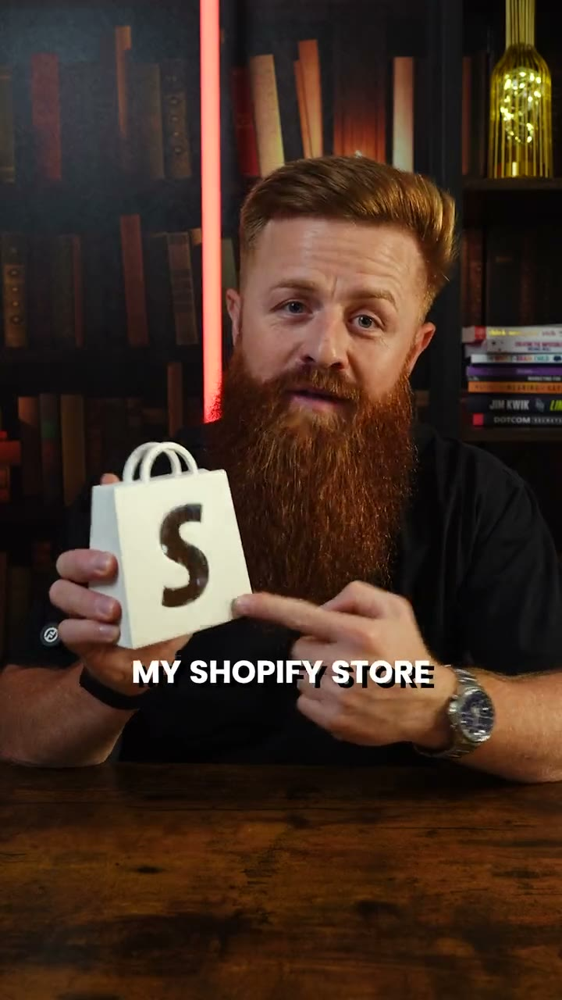
Wix · SponsorHook 3: in the studioHover to pause. Click any ad to play it with sound.
How each ad gets made
Hook, build, cut, check.
Hook
The first three seconds written and cut for a stopped thumb, with two or three openers on the same body to test.
Build
Characters locked first, then every shot generated, voiced and lip-synced to match.
Cut
Paced in Premiere Pro, captions, music and sound effects, delivered at Meta's sizes.
Check
Every caption against the audio, every shot for hands, faces, mouths and product labels, every claim against your product page.
Working together
Full time- Hours
- 30+ hours a week, online through the European working day
- Formats
- 9:16 for Reels and Stories, 4:5 and 1:1 for the feed
- Tools
- Premiere Pro, DaVinci Resolve, After Effects, plus AI image, video, voice and lip-sync tools
- Workstation
- RTX 4090, so many shots are generated locally and fast
Send one product page. I'll send back the hook.
Contracts and payments go through Upwork.